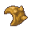
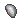
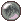
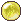
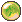
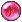
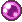

Advanced item modification using Alteration Orbs
Item Alteration is an advanced crafting system that allows you to modify item properties using Alteration Orbs. Unlike enchanting, alteration can reroll stats, add/remove affixes, upgrade rarity, and improve item quality.
| Feature | Enchanting | Item Alteration |
|---|---|---|
| Success Rate | 100% guaranteed | Varies (some can break items) |
| Purpose | Add fixed stat bonuses | Reroll/modify item properties |
| Materials | Pixels + Crystals | Pixels + Crystals + Orbs |
| Complexity | Simple and predictable | Complex with many options |
| Cost | Moderate | Expensive |
There are 11 different alteration orbs, each with unique effects and drop rates. Orbs are looted from enemies during combat.
| Icon | Orb Name | Effect | Usage Requirements | Downside/Risk | Drop Rate |
|---|---|---|---|---|---|
| Orb of Alteration | Rerolls ONE random affix | Requires: 1-2 affixes on item | New roll might be worse than original | Common | |
| Orb of Transformation | Adds ONE new affix | Requires: Less than 3 affixes on item | Random affix - might get unwanted stat type | Common | |
| Orb of Reversal | Removes ONE random affix | Requires: 1-3 affixes on item | Might remove your best affix | Common | |
|  | Armor Plate | +1% armor quality | Requires: Armor, Boots, Gloves, Helm, or Legs | None - safe upgrade | Common |
|  | Sharpening Stone | +1% weapon quality | Requires: Weapon, Ranged Weapon, or Mining Pick | None - safe upgrade | Uncommon |
| Orb of Revision | Rerolls ALL affixes | Requires: 1-3 affixes on item | All affixes rerolled - could get much worse | Rare | |
|  | Orb of Nullification | Removes ALL affixes | Requires: At least 1 affix on item | Intentionally removes all affixes permanently | Rare |
|  | Orb of Fortune | Rerolls item quality/rarity | Cannot be used on Artifact rarity items | 50% chance to BREAK item! (5% upgrade, 45% quality reroll) | Very Rare |
|  | Orb of Divination | Adds 1-3 new affixes | Requires: Exactly 2 affixes on item | Random affixes - might get unwanted stat types | Extremely Rare |
|  | Radiant Orb | Upgrades rarity by 1 tier | Cannot be used on Legendary or Artifact rarity | 10-20% chance to BREAK item (varies by rarity) | Extremely Rare |
|  | Soulstone | Adds +1 max soul level | Cannot be used if item is at max soul level | None - safe upgrade | Exceptionally Rare, but farmable in certain areas |
Alteration requires Pixels, Crystals, and the specific Orb type. Costs vary dramatically based on the alteration type and item properties.
| Item Rarity | Orbs Required |
|---|---|
| Broken/Poor/Common | 1 orb |
| Uncommon | 2 orbs |
| Rare | 3 orbs |
| Epic | 4 orbs |
| Legendary | 8 orbs |
| Artifact | 20 orbs |
Alteration orbs can improve item quality and rarity, but some operations carry significant risk.
Upgrades item rarity by 1 tier with a chance to break based on current rarity:
| Current Rarity | Upgrades To | Break Chance |
|---|---|---|
| Uncommon | Rare | 10% |
| Rare | Epic | 15% |
| Epic | Legendary | 20% |
| Legendary | - | Cannot be used |
| Artifact | - | Cannot be used |
Soul levels are a special item property that allows equipment to gain experience and level up over time.